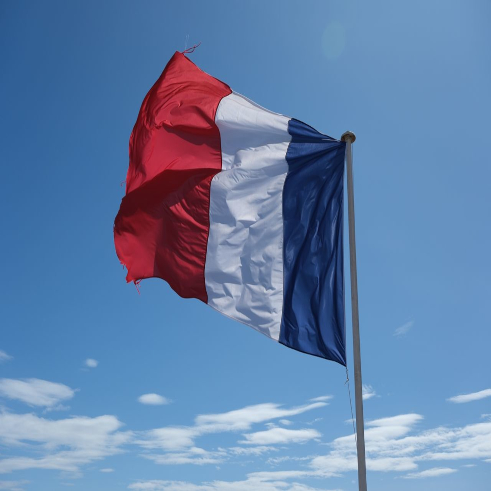

Veja os motivos do porquê eu gostar tanto desse país como um todo.
A França é um país localizado na Europa Ocidental e possui uma das histórias mais influentes do mundo. Ao longo dos séculos, foi palco de importantes acontecimentos, como a French Revolution, que marcou a luta por liberdade, igualdade e fraternidade. Atualmente, a França é uma das principais potências econômicas, culturais e turísticas do planeta, sendo reconhecida por sua rica herança histórica e artística.
A França abriga alguns dos monumentos mais famosos do mundo. A Eiffel Tower é o principal cartão-postal do país e recebe milhões de visitantes todos os anos. Outros locais muito procurados são o Louvre Museum, a Palace of Versailles e a Mont Saint-Michel. Além disso, cidades como Paris, Nice e Lyon oferecem uma grande variedade de atrações culturais, gastronômicas e históricas.
A França é o país mais visitado do mundo por turistas internacionais. O francês é o idioma oficial, mas diversas regiões preservam dialetos e tradições locais. O país também é conhecido por sua forte influência na moda, na arte e na literatura, tendo sido o lar de personalidades como Victor Hugo, Claude Monet e Napoleon Bonaparte. Além disso, o lema nacional "Liberté, Égalité, Fraternité" (Liberdade, Igualdade e Fraternidade) tornou-se um símbolo dos valores da República Francesa.
A França é o país mais visitado do mundo por turistas internacionais. O francês é o idioma oficial, mas diversas regiões preservam dialetos e tradições locais. O país também é conhecido por sua forte influência na moda, na arte e na literatura, tendo sido o lar de personalidades como Victor Hugo, Claude Monet e Napoleon Bonaparte. Além disso, o lema nacional "Liberté, Égalité, Fraternité" (Liberdade, Igualdade e Fraternidade) tornou-se um símbolo dos valores da República Francesa.
"O essencial é invisível aos olhos."- Antoine de Saint-Exupéry
Retorne ao ponto inicial do site: Página Inicial